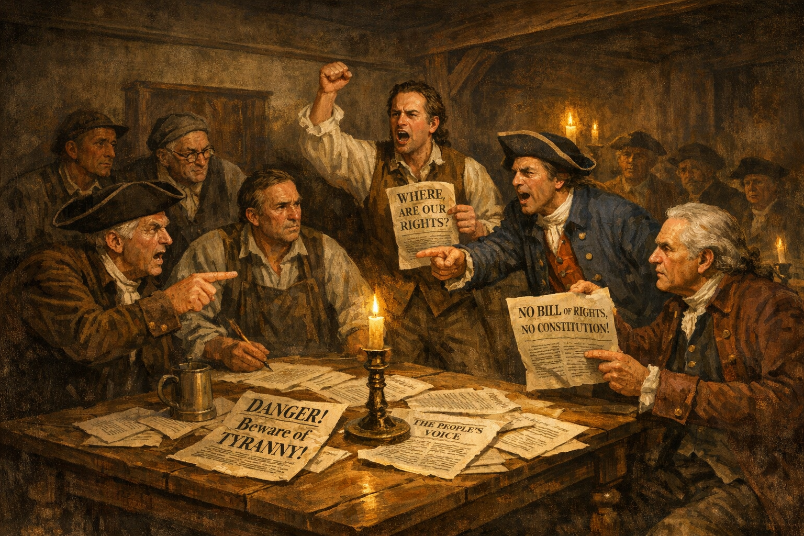
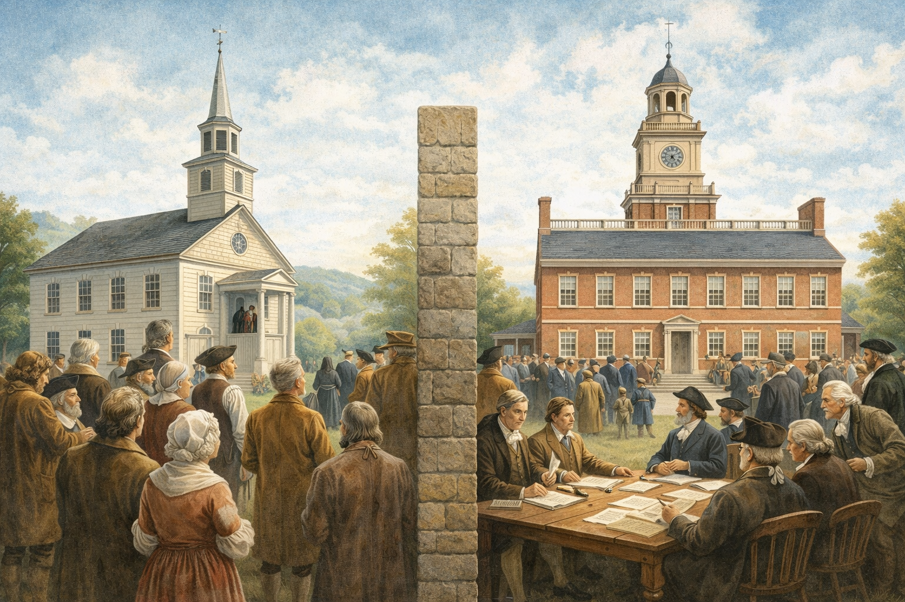
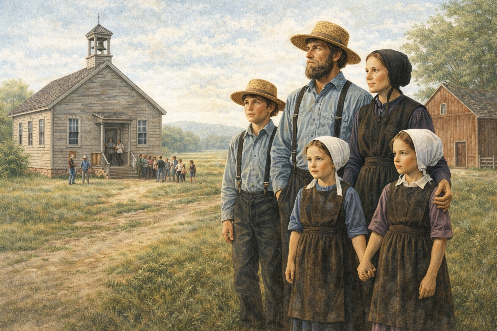
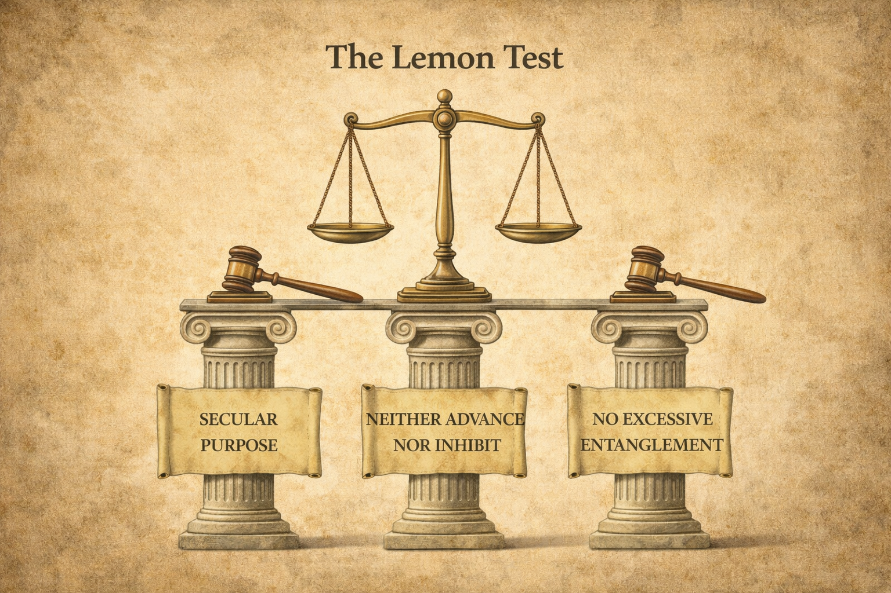
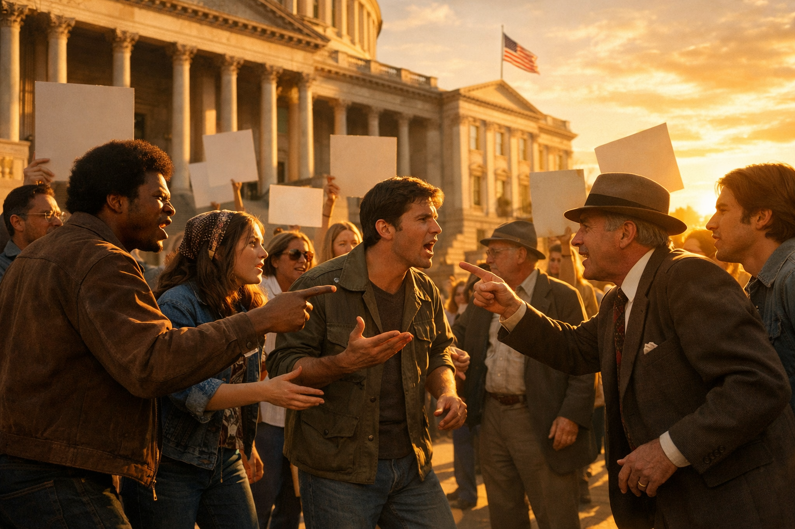
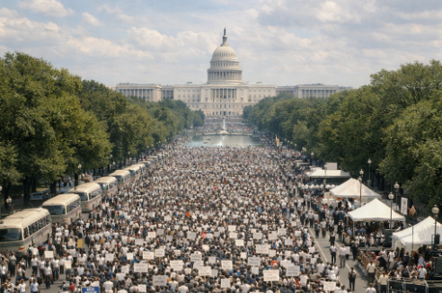
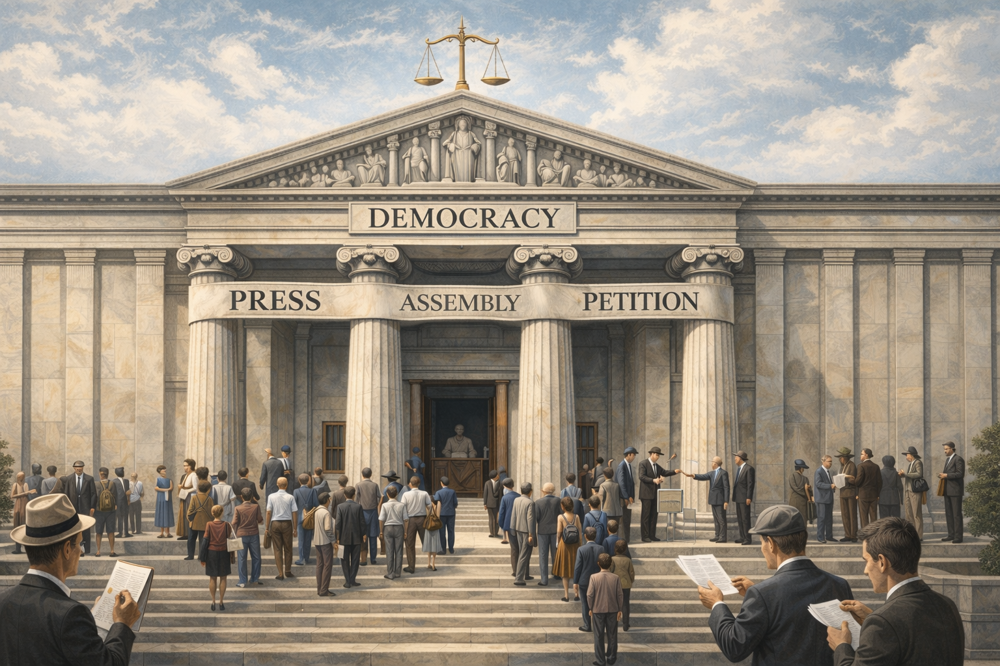
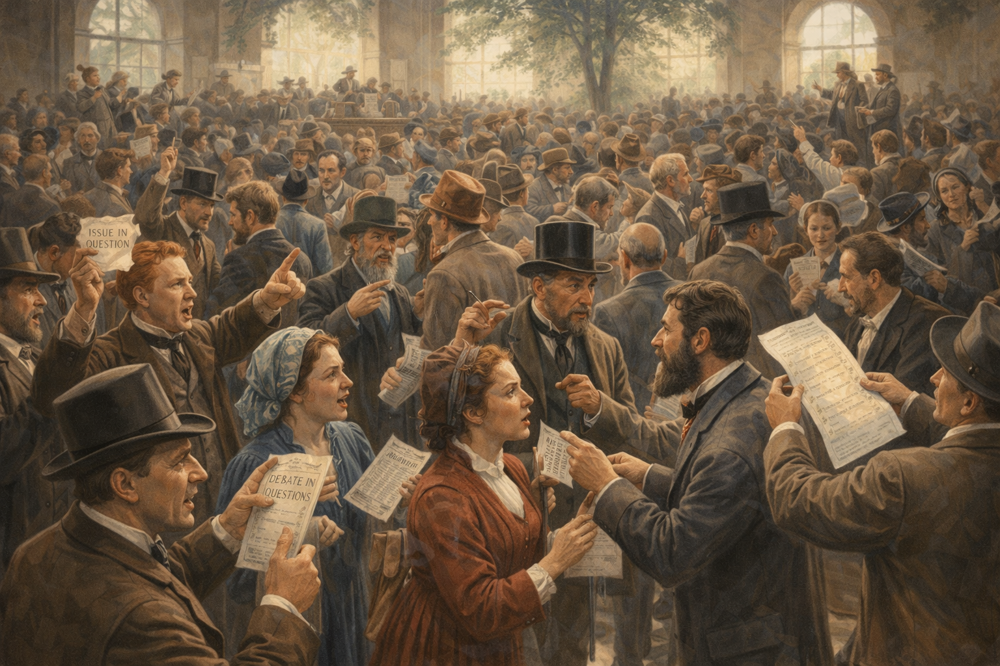
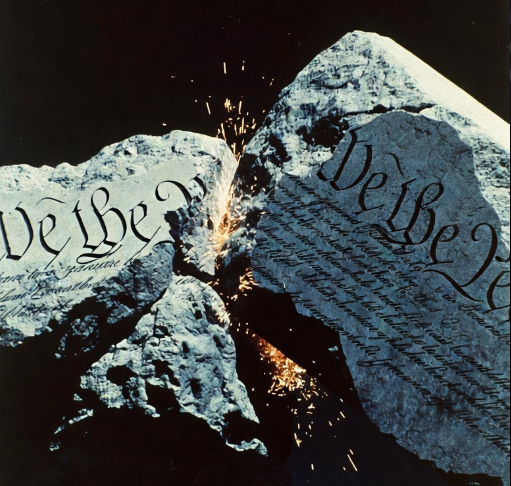

Core Objectives
- Analyze the historical and philosophical origins of the Bill of Rights as a Federalist compromise and evaluate the dual protections of the Establishment and Free Exercise Clauses.
- Evaluate the extent of protected versus limited expression and the judicial standards used to balance freedom of speech with public safety.
- Identify the roles of a free press, assembly, and petition in maintaining democratic infrastructure and holding government accountable.
- Analyze how the First Amendment establishes a structural framework for a "marketplace of ideas" that requires continuous renegotiation between liberty and order.
Key Terms
- Civil Liberties
- Bill of Rights
- Establishment Clause
- Free Exercise Clause
- Symbolic Speech
- Prior Restraint
- Libel
- Clear and Present Danger
- Time, Place, and Manner Restrictions
Introduction
The American experiment in self-governance is built upon a profound paradox: a government must be strong enough to maintain order, yet restrained enough to preserve the very liberty it was created to protect. When the Framers met in Philadelphia in 1787, their primary focus was on the "architecture of power." They were obsessed with the mechanics of how a central government could be designed to prevent any one person or faction from seizing absolute control. Consequently, the original body of the Constitution defined how laws are made, how they are enforced by a President, and how they are interpreted by a Supreme Court. However, the document was notably silent on the specific, inherent rights of the individual. To many Americans of the founding era, particularly the Anti-Federalists, this silence was not merely an oversight; it was a dangerous invitation to tyranny.

The Anti-Federalists argued that a strong central government without explicitly defined individual rights would inevitably lead to tyranny, forcing the promise of a Bill of Rights during the ratification process.
Student Analysis Question: Why did the Anti-Federalists believe that a simple list of government powers in the Constitution was not enough to protect individual liberty?
This silence nearly derailed the ratification process. In states like Massachusetts, Virginia, and New York, critics argued that a government with the power to tax, raise armies, and regulate commerce would eventually crush the people unless its boundaries were explicitly drawn. They remembered all too well the "writs of assistance" used by the British Crown to search homes without warrants and the suppression of colonial newspapers that criticized the King. Alexander Hamilton, writing in Federalist No. 84, argued that a Bill of Rights was unnecessary and even dangerous, claiming that by listing what the government could not do, one might imply it had the power to do anything not listed. However, the political reality was that without a promise to add a Bill of Rights, the Constitution would likely fail to be adopted.
The resulting Bill of Rights, the first ten amendments to the Constitution, serves as the definitive statement of American civil liberties. These are frequently described as "negative rights." In the language of constitutional law, a negative right does not mean it is "bad" or "unpleasant." Rather, it describes a boundary that the government is forbidden from crossing. It is a "thou shalt not" directed at the state. When the First Amendment says "Congress shall make no law," it is creating a protective bubble around the individual, ensuring that certain realms of human life—what we think, how we worship, and how we express our dissent—are off-limits to political interference.
At the heart of these protections stands the First Amendment, often called the "generative core" of American democracy. It protects the fundamental tools of citizenship: the right to think, believe, speak, publish, gather, and complain. The First Amendment does not merely protect the individual for the sake of their own personal happiness. Instead, it serves a structural purpose: it creates a "marketplace of ideas." In this metaphorical market, different views, beliefs, and criticisms compete for public acceptance. The founders believed that in a free society, the remedy for "bad" or "false" speech is not government censorship, but rather "more speech." By protecting even the most unpopular or controversial ideas, the First Amendment ensures that the "consent of the governed" is more than a slogan; it is an active, ongoing process of debate that keeps the government responsive to its people.
Checkpoint
Why was the addition of the Bill of Rights considered a "Federalist compromise" during the ratification of the Constitution?
Freedom of Religion | Establishment and Free Exercise
The First Amendment begins with a dual commitment to religious liberty, expressed through two distinct but overlapping clauses: the Establishment Clause and the Free Exercise Clause. These clauses represent the American solution to a problem that had caused centuries of bloodshed in Europe: the entanglement of government power with religious authority. The Framers, many of whom were students of the Enlightenment, recognized that when the state and the church become one, both institutions suffer. Religion loses its spiritual purity and becomes a tool for political control, while the state becomes an instrument of religious persecution. To prevent this, the First Amendment created a "strategic tension" intended to keep the government neutral while allowing the citizen to remain devout.
The Wall of Separation
The Establishment Clause prohibits the government from creating a national church, favoring one religion over another, or preferring religion over non-religion. In the early years of the Republic, this was understood primarily as a ban on a national version of the Church of England. However, over the 19th and 20th centuries, the Supreme Court interpreted the clause more broadly, adopting Thomas Jefferson’s metaphor of a "wall of separation" between church and state. This wall is intended to ensure that the government does not use its power, prestige, or financial resources to promote religious belief.

The Establishment Clause ensures that the government remains neutral regarding religion, preventing the state from sponsoring or endorsing a national faith, thereby avoiding the sectarian conflicts that plagued Europe.
Student Analysis Question: How does the "wall of separation" between church and state protect both religious institutions and the government?
The most intense debates over the Establishment Clause have occurred in the context of public schools. Because public schools are government-run and students are a "captive audience," the Court has been extremely cautious about any activity that could be seen as government-sponsored faith. A pivotal moment in this history was the 1962 case Engel v. Vitale. The state of New York had authorized a short, voluntary prayer to be recited at the beginning of the school day. While the prayer was nondenominational and students could choose to remain silent or leave the room, the Court ruled it unconstitutional. Justice Hugo Black argued that the government’s "official seal of approval" on a prayer violated the Establishment Clause, even if the prayer was voluntary. This ruling established that the government cannot compose official prayers for any group of Americans to recite as part of a government-sponsored program.
This principle was further tested in Abington School District v. Schempp (1963), which concerned a Pennsylvania law requiring that at least ten verses from the Holy Bible be read at the opening of each public school day. Again, the Court ruled that even if students could be excused, the practice was unconstitutional because it lacked a secular legislative purpose. These cases emphasize that in a pluralistic society, the government must remain a neutral platform. If the state were to favor Christianity, it would implicitly alienate Jewish, Muslim, Hindu, or atheist citizens, turning them into outsiders in their own political community.
Checkpoint
In Engel v. Vitale, why did the Supreme Court rule that voluntary school prayer was unconstitutional?
Protecting Personal Conscience | The Free Exercise Clause
While the Establishment Clause prevents the government from sponsoring religion, the Free Exercise Clause prevents the government from stopping you from practicing your faith. This clause protects the "internal" world of belief—which the government cannot reach—but more importantly, it protects the "external" world of religious conduct. The fundamental idea is that a citizen should not have to choose between obeying the law and obeying their God, unless the government has an incredibly powerful reason to intervene.

The Free Exercise Clause protects religious conduct from government interference unless the state can demonstrate a compelling interest that overrides the individual's religious practice.
A landmark example of this protection is found in Wisconsin v. Yoder (1972). Three Amish families refused to send their children to public school after the eighth grade, arguing that high school attendance was contrary to their religious beliefs and would lead to the destruction of their faith-based community. Wisconsin law required all children to attend school until age sixteen. The Supreme Court ruled in favor of the Amish, finding that the state's interest in universal education did not outweigh the parents' fundamental right to guide their children's religious upbringing. The Court noted that the Amish community was long-established and self-sufficient, meaning the children would not become a "burden" to the state without two extra years of schooling. This case demonstrated that for the government to interfere with a religious practice, it must have a "compelling interest" and must use the "least restrictive means" to achieve it.
However, the right to "free exercise" is not a blank check to ignore any law one dislikes. The Court has long held that while belief is absolute, conduct can be regulated to protect public safety. In Reynolds v. United States (1878), the Court upheld a federal law banning polygamy, even though George Reynolds argued that his Mormon faith required him to have multiple wives. The Court ruled that allowing religious exemptions for every criminal law would make the "professed doctrines of religious belief superior to the law of the land, and in effect... permit every citizen to become a law unto himself." This established a crucial boundary: religious liberty does not justify actions that violate the social order or the rights of others.
Checkpoint
What was the primary reasoning behind the Court's ruling in Wisconsin v. Yoder?
The Balancing Act | The Lemon Test and Neutrality
To handle the constant stream of cases where religious belief and government action collide, the Supreme Court developed a standardized set of criteria known as the "Lemon Test." This test emerged from Lemon v. Kurtzman (1971), a case involving state laws that provided financial support to private religious schools for teachers' salaries and textbooks in secular subjects. The Court wanted to ensure that taxpayer money was not being used to advance religious missions.

Courts use established legal tests to determine if a government action violates the Establishment Clause by evaluating the law's purpose, its primary effect, and the level of state involvement with religion.
The Lemon Test consists of three parts. First, the government action must have a "secular legislative purpose" (it cannot be done purely for religious reasons). Second, its "primary effect" must neither advance nor inhibit religion. Third, the action must not result in "excessive government entanglement" with religion. In the Lemon case, the Court found that the constant monitoring required to ensure that religious school teachers were only teaching secular subjects would create an "excessive entanglement" between the state and the church. If a law fails any one of these three prongs, it is unconstitutional under the Establishment Clause.
The Lemon Test has faced significant criticism over the years, with some justices arguing it is too hostile to religion and others saying it is too confusing to apply. Consequently, the Court has sometimes turned to the "Endorsement Test"—which asks if a reasonable person would think the government is endorsing a particular faith—or the "Coercion Test"—which asks if the government is forcing someone to participate in religious activities. For instance, in cases involving holiday displays on public property, the Court often looks at whether a nativity scene is surrounded by secular symbols like Santa Claus and reindeer. If the overall message is a secular celebration of the holiday season, it is usually allowed; if the message is purely religious, it is often struck down as an unconstitutional endorsement.
Checkpoint
Which of the following is a component of the "Lemon Test"?
The Necessity of Religious Neutrality
The First Amendment’s approach to religion is a strategic compromise designed to manage deep-seated human convictions in a way that preserves social peace. By separating the power of the state from the authority of the church, the founders protected both institutions. Religion is shielded from the corrupting influence of politics, where faith might be used as a tool for gain, and the state is shielded from the divisive nature of sectarian conflict. This dual protection ensures that the American "marketplace of ideas" includes a wide array of spiritual and moral perspectives, none of which can use the force of law to silence the others.
Government neutrality toward religion is a strategic necessity in a pluralistic society, ensuring that the state does not turn citizens into political outsiders based on their spiritual beliefs.
The "strategic tension" between the Establishment and Free Exercise clauses is not a flaw in the system, but a necessary feature of a diverse democracy. It requires the government to treat all citizens with equal dignity, regardless of their relationship to faith. When the government maintains this neutrality, it ensures that religious belief remains a matter of private conscience rather than a matter of public policy. This allows the United States to avoid the religious wars of the past and instead build a community where Muslims, Christians, Jews, Hindus, Buddhists, and atheists can all participate as full and equal citizens. This neutrality is the only way to sustain a marketplace where ideas are judged on their own merits rather than on the religious identity of the speaker.
Checkpoint
Why is government neutrality toward religion considered a "strategic necessity" in a pluralistic society?
Freedom of Expression | Speech, Dissent, and Public Order
If the First Amendment is the cornerstone of democracy, then freedom of speech is its "generative core." This freedom transforms the people from mere subjects of a government into active participants in a "marketplace of ideas." In a functional republic, the government derives its just powers from the "consent of the governed," but that consent is meaningless if the people are not free to criticize their leaders, debate policy, and share information. Freedom of expression ensures that the public can hold those in power accountable, exposing corruption and advocating for change without fear of being silenced by the state. This freedom, however, creates a constant friction between the individual’s right to speak and the government’s responsibility to maintain public order and safety.
The Hierarchy of Protection: | Political and Symbolic Speech
Not all speech receives the same level of protection under the Constitution. The Supreme Court has established a hierarchy, with political speech—the debate over government policy and candidates—at the very top. Because political speech is the lifeblood of self-government, the government has almost no power to restrict it, even if the message is offensive, angry, or deeply critical of the country. This protection extends beyond spoken words to "Symbolic Speech," which includes actions that convey a specific message.
The Supreme Court extended First Amendment protections to symbolic speech, establishing that student expression cannot be censored simply because it is unpopular, provided it does not cause a material disruption.
Student Analysis Question: Why does the Supreme Court place political and symbolic speech at the very top of the "hierarchy of protection"?
A defining moment for symbolic speech occurred during the Vietnam War in the case of Tinker v. Des Moines (1969). A group of students wore black armbands to school to protest the war and mourn the dead. The school district banned the armbands, claiming they would cause a disruption. The Supreme Court ruled in favor of the students, famously declaring that students do not "shed their constitutional rights to freedom of speech or expression at the schoolhouse gate." The Court held that unless the school could prove the speech would "materially and substantially interfere" with the operation of the school, it could not be suppressed. This established the "Tinker Standard," which protects student expression that is not disruptive.
This protection for symbolic speech was pushed to its limit in Texas v. Johnson (1989), when Gregory Lee Johnson burned an American flag in front of the Dallas City Hall to protest Reagan administration policies. He was convicted under a Texas law that prohibited "desecration of a venerated object." The Supreme Court overturned his conviction, ruling that flag burning is a form of "expressive conduct" protected by the First Amendment. Justice William Brennan wrote, "If there is a bedrock principle underlying the First Amendment, it is that the government may not prohibit the expression of an idea simply because society finds the idea itself offensive or disagreeable." This case emphasized that the government cannot silence a message just because the method of delivery is shocking or unpopular.
Checkpoint
What was the "Tinker Standard" established by the Supreme Court?
The Limits of Speech | From Schenck to Brandenburg
While the First Amendment protects a vast amount of expression, it is not an absolute shield for all behavior. The government has a legitimate interest in preventing speech that causes direct, physical harm or leads to immediate violence. Throughout the 20th century, the Supreme Court struggled to define exactly where the line should be drawn. During World War I, in the case of Schenck v. United States (1919), Charles Schenck was arrested for distributing leaflets encouraging men to resist the military draft. Justice Oliver Wendell Holmes famously argued that the government could limit speech if it posed a "Clear and Present Danger" to the nation. He noted that the First Amendment would not protect a man "falsely shouting fire in a theatre and causing a panic."

The government's ability to restrict speech has historically been tied to situations where expression poses an immediate threat of lawless action or physical harm, rather than merely being offensive.
However, the "Clear and Present Danger" test was often used by the government to silence political radicals and war protesters, even when their speech posed no real threat of immediate violence. Consequently, the Court eventually moved toward a much stricter standard in Brandenburg v. Ohio (1969). This case involved a leader of the Ku Klux Klan who was arrested for making a speech that suggested "vengeance" against the government. The Court overturned his conviction, establishing the "Imminent Lawless Action" test. Under this modern standard, the government can only punish speech if it is intended to incite immediate illegal acts and is likely to produce such acts. This ensures that even the advocacy of radical or violent ideas is protected, so long as it does not lead to an immediate riot or crime.
Other categories of speech that receive little to no protection include "obscenity"—defined as material that appeals to a prurient interest and lacks serious value—and "true threats," where a person expresses a genuine intent to commit an act of unlawful violence against a specific individual. By carving out these narrow exceptions, the Court attempts to protect the "marketplace of ideas" while ensuring that the marketplace does not become a staging ground for physical harm.
Checkpoint
How did Brandenburg v. Ohio change the legal standard for restricting speech?
Defamation and the Breathing Space for Criticism
One of the most complex areas of First Amendment law involves "defamation"—false statements of fact that damage a person's reputation. When these statements are written, they are called Libel; when they are spoken, they are called Slander. While individuals have a right to protect their reputation, the Supreme Court has ruled that this right must be balanced against the public’s need to criticize its leaders. If a newspaper could be sued for every minor factual error in a story about a politician, journalists would be too afraid to report on government corruption. This is known as the "chilling effect."

To ensure that the press can properly scrutinize public officials, the courts require proof of actual malice before allowing politicians to win defamation lawsuits, preserving the breathing space necessary for democratic debate.
To prevent this, the Court established a very high bar for public figures in New York Times v. Sullivan (1964). During the Civil Rights Movement, an Alabama official sued the New York Times for an advertisement that contained minor factual inaccuracies about the conduct of local police. The Court ruled that for a public official to win a libel case, they must prove "actual malice." This means they must prove that the publisher knew the information was false or acted with a "reckless disregard" for the truth. This standard recognizes that in a robust democracy, some errors of fact are inevitable. By providing this "breathing space," the First Amendment ensures that the press can perform its watchdog role without the constant threat of bankrupting lawsuits from the powerful.
This protection does not apply to private individuals, who only need to prove that a publisher was "negligent" (did not take reasonable care) in checking their facts. However, for those who choose to enter the public arena—politicians, celebrities, and high-ranking officials—the Constitution demands that they tolerate a higher level of criticism. This ensures that the "marketplace of ideas" remains a place where the powerful are held accountable by the people, even if the debate is occasionally messy or inaccurate.
Checkpoint
What must a public official prove to win a libel lawsuit?
The Strategic Logic of Dissent
The First Amendment’s protection of expression is not just a gift to the individual; it is a strategic necessity for the stability of the state. A government that silences its critics is a government that cuts itself off from vital information. When dissent is suppressed, errors go uncorrected, corruption grows in the dark, and social pressures build until they explode in violence. By protecting "the right to be wrong," the Constitution creates a safety valve for social frustration and a mechanism for peaceful, incremental change.

Protecting dissent acts as a necessary safety valve for a society, allowing frustration and disagreement to be channeled into debate and reform rather than erupting into violence.
The "marketplace of ideas" assumes that through open competition, the most effective and truthful ideas will eventually prevail. While this process is often uncomfortable and leads to significant social friction, it is the only way to ensure that a democracy remains responsive to its people. The First Amendment manages the tension between liberty and order not by eliminating conflict, but by channeling it into the realm of debate rather than the realm of force. In doing so, it ensures that the "consent of the governed" is an ongoing dialogue that allows the nation to adapt to new challenges without sacrificing its core principles.
Checkpoint
How does protecting "the right to be wrong" benefit a democratic government?
Press, Assembly, and Petition | Democratic Infrastructure
While the rights of speech and religion protect the individual's inner world, the rights of press, assembly, and petition build the "democratic infrastructure" of the nation. These freedoms provide the institutional pathways through which citizens can organize, investigate, and challenge the state. They ensure that political participation is not something that only happens during an election, but is a continuous part of American life. Without these collective rights, individual speech would often be a lonely cry in the wilderness; with them, speech becomes a powerful force for social and political change. These rights enable citizens to act as a collective check on the branches of government.
The Watchdog Role and Prior Restraint
Freedom of the press is often described as the "Fourth Estate," an informal fourth branch of government that monitors the other three. In a complex society, individual citizens rarely have the resources to investigate the inner workings of the Pentagon or the local city council. They rely on journalists to do this work for them. To protect this role, the Supreme Court has established a heavy presumption against "Prior Restraint"—the government’s attempt to block information from being published before it reaches the public.
By heavily restricting prior restraint, the courts prevent the government from classifying its own mistakes and ensure the press can function as an independent watchdog over state power.
Student Analysis Question: Why is "prior restraint" considered one of the most severe threats to a free society?
The classic example is the 1971 case New York Times Co. v. United States, also known as the "Pentagon Papers Case." Daniel Ellsberg, a military analyst, leaked a classified 7,000-page study to the press that revealed the government had lied to the public about the progress of the Vietnam War. The Nixon administration sued to stop the New York Times and the Washington Post from publishing the documents, arguing that doing so would cause "irreparable harm" to national security. The Supreme Court ruled against the government, finding that the word "security" should not be used to "abrogate the fundamental law embodied in the First Amendment." Unless the government can prove an immediate and catastrophic threat—such as revealing the location of troops during an active battle—it cannot stop the press from telling the truth.
This protection ensures that the government cannot hide its mistakes or its lies behind a veil of "classification." A free press acts as a watchdog, ensuring that the people have the information they need to hold their leaders accountable at the ballot box. Without the prohibition on prior restraint, the government could easily become the sole source of information, effectively ending the marketplace of ideas and replacing it with a state-controlled narrative.
Checkpoint
Why did the Supreme Court allow the publication of the "Pentagon Papers"?
The Power of Gathering | Freedom of Assembly
The right of the people "peaceably to assemble" allows citizens to gather in groups—whether for a political rally, a labor strike, or a religious convention—to express their collective will. Assembly is the primary tool for those who lack traditional political power; it allows them to gain visibility through numbers and solidarity. Throughout American history, the right to assemble has been the engine of social movements. From the suffragists marching for the right to vote in the early 1900s to the massive Civil Rights marches of the 1960s, the ability to occupy public space is essential for demanding justice.

The right to assemble allows citizens without traditional political power to exert influence through organized solidarity, provided the gatherings adhere to content-neutral safety regulations.
However, the right to assemble is subject to "Time, Place, and Manner Restrictions." The government can regulate the logistics of a protest to ensure public safety and the flow of traffic. For example, a city can require a permit for a march that blocks a major highway or ban the use of loud megaphones in residential areas late at night. For these rules to be constitutional, they must be "Content-Neutral"—meaning they apply to everyone regardless of their message. A city cannot allow a "Support our Troops" rally while denying a permit for an anti-war protest in the same location.
The tension in assembly cases often involves the "Heckler's Veto." This occurs when the government tries to shut down a peaceful protest because they fear an angry crowd will attack the protesters. The Supreme Court has generally ruled that the police must protect the protesters' right to speak, rather than silencing them to prevent a riot. This ensures that the most controversial groups still have the right to gather, preventing the government from using the threat of "disorder" as an excuse to silence dissent.
Checkpoint
What is a requirement for a "Time, Place, and Manner" restriction to be constitutional?
The Direct Line | The Right to Petition
The right to "petition the government for a redress of grievances" is the most direct way citizens interact with their government. Often overshadowed by speech and press, the right to petition is the foundation of advocacy and lobbying. It includes everything from signing a letter to a member of Congress to filing a lawsuit in court. This right ensures that the government is legally obligated to at least receive and hear the complaints of its citizens.
Petitioning the government encompasses a wide range of actions, from signing formal documents to filing lawsuits that challenge state policies, creating a direct line of accountability.
In the modern era, the right to petition has evolved into a sophisticated system of lobbying and litigation. Interest groups, such as the NAACP or the NRA, use the right to petition to advocate for specific laws or to challenge government actions in court. For example, the landmark desegregation case Brown v. Board of Education was a form of "petitioning the government" through the judicial branch. This right allows citizens to use the state’s own legal machinery to hold the state accountable.
The right to petition ensures that the "consent of the governed" is an ongoing, daily interaction. It allows for the creation of "civil society"—the network of clubs, unions, and non-profits that buffer the individual from the power of the state. By protecting the right to complain and demand change, the First Amendment ensures that the government remains a servant of the people rather than their master.
Checkpoint
Which of the following is an example of exercising the "right to petition"?
The Architecture of Accountability
The collective freedoms of press, assembly, and petition form an architecture of accountability that is essential for a healthy republic. These rights ensure that information flows freely from the government to the people, and that the demands of the people flow back to the government. By protecting the right to investigate, the right to gather, and the right to complain, the First Amendment ensures that power is never concentrated in a single, unchallengeable center.

The combined rights of press, assembly, and petition transform individual free speech into a strategic mechanism for exposing corruption and demanding government responsiveness.
This infrastructure turns the "marketplace of ideas" into a "marketplace of action." It provides the tools necessary for citizens to move from having opinions to influencing outcomes. While the exercise of these rights can lead to social friction and political conflict, that friction is the sign of a living democracy. The First Amendment ensures that the government must constantly justify its actions to an informed and organized citizenry, preventing the consolidation of absolute power and maintaining the responsiveness of the state.
Checkpoint
How do press, assembly, and petition create an "architecture of accountability"?
The Strategic Marketplace of Ideas
The First Amendment is not merely a list of five separate freedoms; it is a unified structural framework for a functional republic. Each freedom—religion, speech, press, assembly, and petition—works in tandem to ensure that the "consent of the governed" remains a continuous and meaningful process. By protecting the individual's right to think, believe, and speak, the Constitution ensures that the government does not have a monopoly on truth. Instead, truth is discovered through the rigorous competition of the "marketplace of ideas." This marketplace assumes that if all ideas are allowed to compete, the most effective, truthful, and just ones will eventually prevail.
Conflict as a Tool of Governance
A common mistake is to view the First Amendment as a tool for social harmony. In reality, it is a tool for managing conflict. The founders knew that in a large, diverse nation, people would always disagree—often passionately—over religion, politics, and morality. The First Amendment does not try to end these disagreements; instead, it provides a safe arena where they can play out. By protecting the "right to be wrong," the Constitution ensures that the government cannot use its power to settle these debates by force.

The founders designed a system where truth is discovered not through government mandate, but through the rigorous, often uncomfortable competition of differing viewpoints.
Student Analysis Question: Why did the founders view social and political conflict as an essential tool of governance rather than a threat to the nation?
This process is inherently messy. The marketplace of ideas includes speech that is offensive, religious practices that are confusing, and protests that are inconvenient. However, the alternative—government-enforced "order"—is far more dangerous. When a government decides which ideas are "safe" and which are "dangerous," it effectively ends the process of self-correction. History is full of examples where the "dangerous" ideas of one generation (such as the idea that the earth revolves around the sun, or that all people should be equal under the law) became the "common sense" of the next. By protecting dissent, the First Amendment allows the nation to evolve.
Checkpoint
Why did the founders believe that conflict and disagreement were necessary for a healthy democracy?
Modern Tensions in the Digital Square
The marketplace of ideas is currently facing its greatest challenge since the founding: the digital revolution. For most of American history, the "marketplace" existed in physical town squares, newspapers, and broadcast television. Today, it exists on social media platforms owned by massive private corporations. This creates a new "strategic tension." The First Amendment only limits what the government can do; it does not limit what private companies like Facebook or X (formerly Twitter) can do.

The digital revolution has shifted the marketplace of ideas into privately owned spaces, raising novel challenges regarding content moderation, fake news, and the lack of First Amendment constraints on corporations.
This has led to a fierce debate over "content moderation." If a private company removes a user for spreading misinformation, is it protecting the marketplace from "pollution," or is it effectively acting as a new kind of censor? Furthermore, the speed and scale of the internet allow for the rapid spread of "fake news" and algorithmic "echo chambers" where people only hear ideas they already agree with. These modern challenges force us to ask if the marketplace of ideas can still function when the "market" is controlled by private algorithms rather than public debate.
The principles of the First Amendment remain our best guide for navigating these tensions. The solution to "bad speech" in the digital age remains "more speech"—better education, more transparent algorithms, and a more engaged citizenry. While the technology has changed, the underlying need for a free and open exchange of ideas remains the same. The marketplace of ideas must be continuously maintained and defended to ensure it does not become a tool for manipulation.
Checkpoint
Why doesn't the First Amendment prevent social media companies from banning users?
The Necessity of Friction
Ultimately, the First Amendment safeguards the very diversity of thought that prevents the consolidation of absolute power. It is the "friction" in our system—the constant push and pull between the government and the governed—that keeps the republic alive. By protecting the right to be "unpopular," the Bill of Rights ensures that the majority cannot use the law to crush the minority. This protection is what allows the United States to be a nation of many voices rather than a nation of one.

The continuous friction between the government's need for order and the people's demand for liberty is a deliberate feature of American governance, forcing each generation to actively negotiate their freedoms.
The "strategic tension" between individual liberty and social order is never permanently resolved. Each generation of Americans must decide for themselves where the boundaries lie. But by keeping the marketplace of ideas open, the First Amendment ensures that we always have the tools to make those decisions peacefully and democratically. It is the guarantee that in the American system, power will always be subject to the scrutiny of the people.
Checkpoint
What is the primary role of the Bill of Rights in protecting the minority from the majority?
Conclusion
The First Amendment stands as the ultimate guardian of American democracy, protecting the essential freedoms that allow a pluralistic society to function. We have seen how the religion clauses manage the delicate balance between faith and the state, ensuring that the government remains neutral while citizens remain free to follow their consciences. We have explored the generative power of free expression, distinguishing between the high protection given to political speech and the narrow limits placed on speech that causes immediate harm. We have also examined the democratic infrastructure of the press, assembly, and petition, which provide the institutional checks necessary to hold power accountable.

While the First Amendment and the Bill of Rights establish the boundaries that protect individual liberty from the state, the next phase of the American story involves the use of those liberties to demand equal treatment under the law.
Student Analysis Question: How does the protection of civil liberties established by the First Amendment create the foundation necessary to fight for civil rights?
Throughout this chapter, we have analyzed the "strategic tension" between individual liberty and social order. This tension is a fundamental feature of our constitutional design. Whether it is a student wearing an armband to protest a war, a newspaper publishing classified documents to expose government lies, or a religious group seeking an exemption from a law, these conflicts force us to define our values. The "marketplace of ideas" is often loud, contentious, and uncomfortable, but it is the only environment where truth can be discovered and justice can be pursued.
As we move forward to the next chapter, we will shift our focus from these "negative rights"—what the government cannot do—to the realm of "positive rights" and protections. While the Bill of Rights protects our civil liberties from government overreach, the next phase of our study focuses on Civil Rights: the struggle to ensure that the government treats every individual individual equally and protects them from discrimination. Just as the First Amendment ensures we have the right to speak, civil rights ensure that everyone has an equal place at the table where that speaking occurs. The journey from the protection of liberty to the guarantee of equality is the next great chapter in the American story.
Chapter Assessment
Section I – Vocabulary (Cloze)
A. The are the first ten amendments to the U.S. Constitution, which list specific prohibitions on governmental power.
B. Constitutional protections for individuals against government action, such as freedom of speech, are known as .
C. The prohibits the government from favoring one religion over another or establishing an official state church.
D. When the government censors information before it is published, it is engaging in .
E. is a form of non-verbal communication, such as wearing an armband, that is protected by the First Amendment.
F. The protects a citizen's right to practice their religion without government interference.
G. Written defamation that is false and damaging to a person’s reputation is called .
H. The judicial standard permits limits on speech that poses an immediate threat to public safety.
I. Government rules that regulate the "when, where, and how" of an assembly without silencing the message are called .
Section III – Guided Analysis
Compare and contrast the Establishment Clause and the Free Exercise Clause. How do they work together to protect religious pluralism in the United States?
Explain the concept of the "marketplace of ideas." Why did the founders believe that "more speech" was the best remedy for "bad speech"?
Analyze the strategic tension between individual liberty and social order using the example of "Time, Place, and Manner Restrictions." Why are these restrictions allowed at all?
Why is the standard of "Strict Scrutiny" so high, and what does it reveal about the value the American legal system places on freedom of expression?
Section IV – Visual Analysis

How does this visual represent the concept of religious neutrality as defined in the Establishment Clause?
Based on the chapter, what are two specific government actions that would be "blocked" by this wall?

Why is political speech placed at the very top of the hierarchy of protection?
According to the chart and the text, what must happen for speech to move from the "protected" category to the "unprotected" category of "incitement"?
Section V – Primary Source (CER)
"If there is any fixed star in our constitutional constellation, it is that no official, high or petty, can prescribe what shall be orthodox in politics, nationalism, religion, or other matters of opinion or force citizens to confess by word or act their faith therein."
— Justice Robert Jackson, West Virginia State Board of Education v. Barnette (1943)
CER Prompt: Using the excerpt above and your knowledge from the chapter, write a paragraph answering the following: How does the First Amendment prevent the government from enforcing a "national orthodoxy" (a single set of beliefs)?
Claim: State your position on how the First Amendment prevents government-enforced beliefs.
Evidence: Reference specific language from the quote or specific First Amendment clauses.
Reasoning: Explain why this protection is essential for maintaining a "marketplace of ideas" in a democracy.
Section VI – Modern Reflection
In the digital age, the "marketplace of ideas" has moved largely to social media platforms. Unlike the "town square," these platforms are owned by private companies, not the government. Based on your understanding of the First Amendment, should these private companies be allowed to censor speech on their platforms, or does this undermine the democratic infrastructure described in the chapter? Consider the tension between the rights of a private business and the public's need for a free and open exchange of ideas.